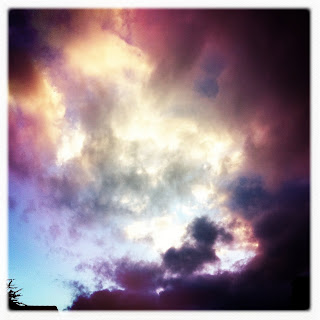

Recovered weblog entry
Storm receding

The rain left everything cold and clean. Off to the east, the Superstitions and further ranges were dusted in snow. Not an ounce of dust or soot was to be found in the sky. Lens: Lucifer VI
Film: Ina's 1935